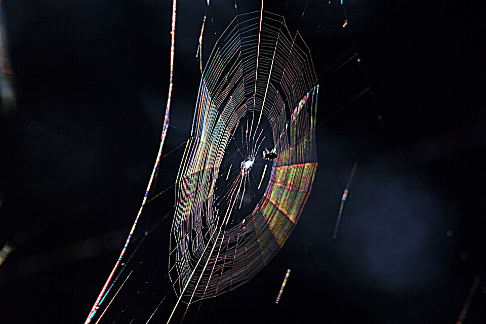

惠更斯波動實驗室
高一物理・看見波前如何傳播與改變
可暫停、調整參數，再慢慢講解
情境
平面波
圓形波
折射與司乃耳定律
反射
雙波源干涉
教材繞射：狹縫、障礙物、邊緣
聲音干涉與偵測器
雷射雙縫干涉
蜘蛛絲彩光
光碟片
牛頓環
地面油膜
肥皂泡
聲音的都卜勒效應
光的都卜勒｜恆星與企業號
暫停
單步
三角形推導 ↗
真實情境｜蜘蛛絲彩光

先觀察照片中絲上的彩色光帶，再拖曳旁邊示意圖的黃點，對照觀察方向或局部厚度如何影響合成色。
照片是情境參考；示意圖採理想模型，間距、厚度並非由照片量得。
Brocken Inaglory / Wikimedia Commons
照片原始資料
·
CC BY-SA 3.0
僅縮小尺寸，未裁切或改色。
━━ 子波的包絡（波峰波前）
● 波前上的點波源
◠ 持續擴大的子波
━━ 波源 A／縫內點 1
━━ 波源 B／縫內點 2
━━ 縫內點 3／等路徑線
從波前三角形推出司乃耳定律
返回模擬 ×
← 上一步
下一步 →